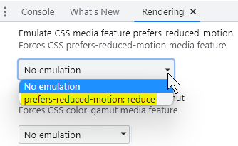

Animation and motion
Animation from interactions
People with vestibular (inner ear) disorders need control over movement triggered by interactions. Movement can trigger vestibular disorder reactions, including distraction, dizziness, headaches and nausea.
WCAG requires (at Level AAA) that motion animation triggered by interaction can be disabled unless the animation is essential to the functionality or the information being conveyed.
Moving new content into the viewport is essential for scrolling. The user controls the essential scrolling movement, so it is allowed.
If scrolling a page causes elements to move (other than the essential movement associated with scrolling), it's problematic.
Parallax scrolling is also problematic. It occurs when scrolling backgrounds move at a different rate to foregrounds.
WCAG recommends choosing one of three alternatives for reducing the chances of triggering a vestibular disorder:
- Avoid using unnecessary animation.
- Provide a control for users to turn off non-essential animations from user interaction (site wide)
- Take advantage of the reduced motion feature in the user-agent or operating system with the CSS
prefers-reduced-motionmedia query:
CSS
Code begins
@media (prefers-reduced-motion: reduce) { /* CSS to disable motion goes here */ }Code ends
Good example: Combining operating system reduced motion feature with CSS media query
CSS offers a prefers-reduced-motion media query that respects user settings for motion.
This example demonstrates a :hover and :focus jiggling motion on a button. It's disabled when both:
- the
prefers-reduced-motionCSS Media Query is set toreduce, and - the user-agent or operating system has the reduced motion feature set.
Example: Motion triggered by user interaction
CSS
Code begins
button:focus, button:hover {
animation: shake 0.82s cubic-bezier(.36,.07,.19,.97) both;
}
@media (prefers-reduced-motion: reduce) {
button:focus, button:hover {
animation: none;
}
}Code ends
Note that Windows 10 has the option to turn off "Show animations in Windows":
Example begins
Example ends
You can instead emulate the operating system's reduced motion feature in a browser that offers the option. For instance, in Chrome's Tools menu, the Rendering submenu offers "Emulate CSS media feature prefers-reduced-motion". Activating that option is equivalent to changing the operating system's setting.
Example begins
Example ends
Parallax
Parallax scrolling occurs when backgrounds move at a different rate to foregrounds. It involves extra non-essential animations when the user scrolls. Decorative elements move horizontally when the essential page content is scrolled vertically. For some people, this can trigger vestibular disorders including dizziness, nausea and headaches.
- Avoid parallax scrolling or provide a control for user to turn it off.
- Keyboard users must be able to access the hidden area of a parallax scrolling area and use all of the features of the web page.
- If in CSS the hidden content is set to
display: none, keyboard users may not be able to access the hidden parts of the content. - The text must be readable against the background and must pass the WCAG contrast guidelines of 4.5 to 1 for small text or 3:1 for large or bold text.
Bad example: Using parallax scrolling.
Example: Parallax Scrolling
Source: Deque Bad example: Parallax
Background videos or animations
Background videos or animations provide extra information and enhancement to web content. If any critical information is conveyed in the background video, then the video must be fully accessible, with captions and a descriptive transcript
- Do not have any content start playing automatically when the page loads.
- Allow users control over the start and stop of moving content or audio content.
- WCAG AA allows videos to autoplay for up to 5 seconds, but if content plays longer than 5 seconds, a mechanism must be provided to pause, stop, or hide the content.
Good example: Background video with play / pause feature
Example begins
Example ends
Related WCAG resources
Related WCAG resources
Success criteria
Techniques
- G4: Allowing the content to be paused and restarted from where it was paused
- G186: Using a control in the Web page that stops moving, blinking, or auto-updating content
- C39: Using the CSS reduce-motion query to prevent motion